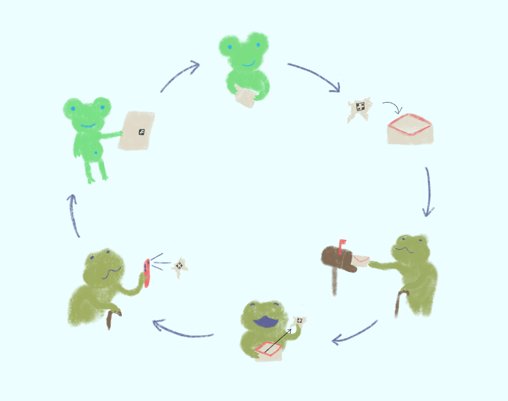

What is Origami Friends? Well, Origami Friends is the attempt of a bunch of game designers to take a new spin on chain letters, and use them as a positive means of reaching out to friends and families, especially during quarantine, when the distance between us can feel further apart than ever before.
The goal is simple! Pick a design from our Designs tab (they are labeled by difficulty level, so don’t worry if you have never done origami before!), and print the provided pdf from your printer. It may not look like much now, but if you follow the instructions on the Designs tab carefully, you’ll soon have a nifty Origami Friend of your own. Now grab a letter, and place your masterpiece inside, ready to send to a family or friend, near or far! Don’t be afraid to add a little letter of your own to travel with your origami. Say how you are, what you have been up to lately, maybe how any pets of yours are doing. Encourage them to visit this website!
When they receive your Origami friend, they should find a handy-dandy QR code, easily visible on the design. Scan it with a smart device, or type in the accompanying url into the browser of your choice, and Tada! You’ve just introduced someone to the wonders of Origami Friends, and now they’re ready to make their own set of friends, to mail and spread the positivity even more.